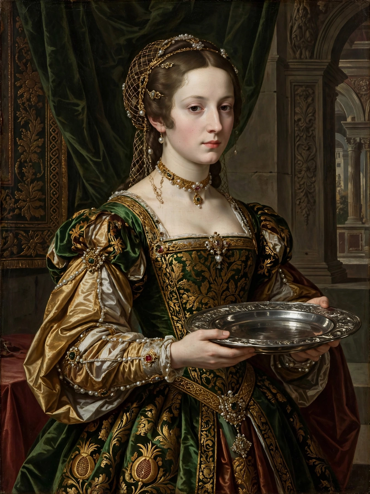

| Salome | |
|---|---|
 | |
| Dynasty | Herodian |
| Mother | Herodias |
| Stepfather | Herod Antipas |
| Spouses | Philip the Tetrarch; Aristobulus of Chalcis |
Salome (Greek: Σαλώμη, Salōmē) was a daughter of Herodias and Herod II, and stepdaughter of Herod Antipas, tetrarch of Galilee. She is known from the New Testament and from the Jewish historian Josephus. In the Gospels of Matthew and Mark, the daughter of Herodias — identified by Josephus as Salome — danced before Herod Antipas at his birthday feast; pleased, he promised her whatever she asked, and at her mother's prompting she requested the head of John the Baptist on a platter.
Josephus names Salome and gives details of her marriages: first to her uncle Philip the Tetrarch, ruler of Iturea and Trachonitis, and after his death to Aristobulus of Chalcis, with whom she had three sons. Coins of Aristobulus depict Salome, making her one of the few women of the Herodian court portrayed on coinage. The biblical narrative itself does not give the dancing girl's name; the identification with Salome comes from Josephus.
The figure of Salome became a staple of Christian art, depicting her dance, the presentation of the Baptist's head, and her role as an emblem of dangerous female sexuality — the femme fatale. The theme flourished in the nineteenth century: Gustave Moreau painted her repeatedly, Oscar Wilde wrote the play Salomé (1891, first in French), and Richard Strauss turned Wilde's play into the opera Salome (1905), famous for the "Dance of the Seven Veils" — a name for the dance that originates with Wilde. The story has since been retold in films, ballets and popular music.
The New Testament also mentions a Salome among the women who followed Jesus and witnessed the crucifixion, sometimes identified as the mother of the apostles James and John. Salome Alexandra was a queen of Judaea in the first century BCE.
See also: Galilee · John the Baptist · Herod Antipas